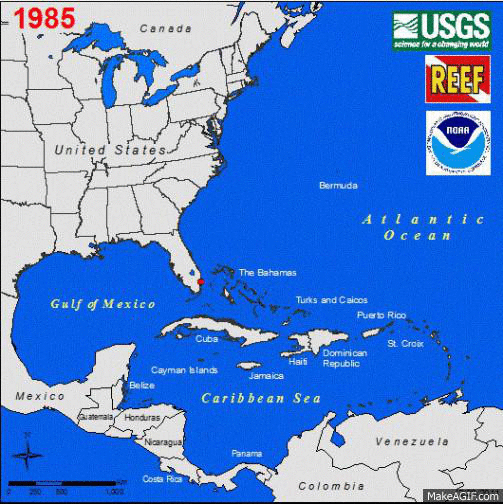
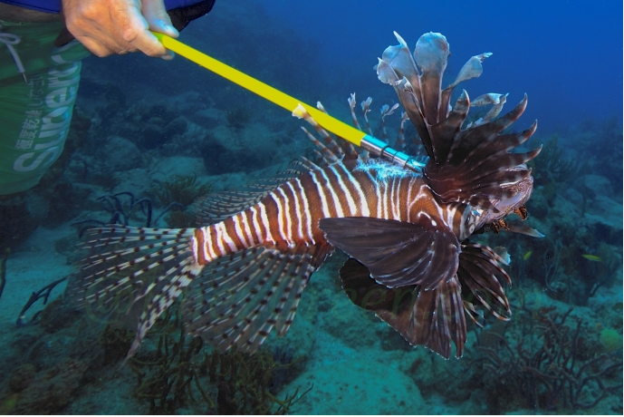

What to do with a species that doesn't belong, is spreading like wildfire and causing damage to native ecosystems?
Some are suggesting take down by knife and fork.
The idea, termed invasivorism, is growing in popularity as an alternative strategy to control invasive species. But after speaking to experts and many invasivores, it's clear that it'll be pretty hard for this idea to actually work. In order for a species to be controlled via consumption chefs have to be able to acquire it and make it delicious enough for people to want to eat. It's a difficult task—a majority of the 4,300 invasives will never meet the necessary criteria. Yet there is a least one species that invasivores, experts and chefs deem a serious contender for control by consumption… the lionfish.
Lionfish aren't native to the waters of the Western Atlantic, Caribbean and Gulf of Mexico, where they are now taking over, reducing native marine species by an average of 65 percent. Originally from the Indo-Pacific, the striped psychedelic-looking invader was first spotted in 1985, off the southeast coast of Florida, after reportedly being dumped by citizens who no longer wanted them in their aquariums. Since 1985, the situation has changed dramatically:
“We're finding them as shallow as inches and as deep as a thousand feet,” said Lad Akins, Director of Special Projects at Reef Environmental Education Foundation (REEF) who has led the charge in battling the invasion, organizing lionfish derbies and co-authoring a cookbook. “Determining just how many are out there is not within our realm—for certain it is many millions.”
And each one of these millions of fish is perfectly designed for ecosystem takeover. Equipped with 18, sharp, venomous spines, the fish has no known predators. Capable of reproducing throughout the year, every three to four days, a single female lionfish can spawn upwards of 2 million eggs annually. And their appetites make them appear more vacuum than vertebrae. “Lionfish are glutinous predators, they will eat anything that moves and fits into their mouth, sometimes larger than half their own body size,” Akins said. And they have absolutely no concept of portion control—eating more than 1,000 pounds of prey per acre per year in places such as the Bahamas. This includes native species such as snapper and grouper, vital for local economies and small reef dwellers such as the fish that clean the algae off the reefs (NAME?), cleaner wrasses that help to keep parasite load down on the reef required to maintain natural ecosystem stability. “There just may not be a lot left after lionfish have run their course,” Akins said.
The dramatic influence on biodiversity, experts say, isn't in the realm of a price tag. “The coral reefs are like our Yellowstone in the sea,” said James Morris, an ecologist at the National Centers for Coastal Ocean Science and one of NOAA's premiere lionfish experts. “Now we have an invasive species that's threatening the integrity of these valuable natural resources—it's really hard to translate that into economic dollars.” What's worse, Morris noted, is that the invasion hasn't reached its peak yet. And if we don't get the populations under control, the damage will be irreversible.
“Complete elimination is no longer an option,” Morris said. In a recent study, he estimated that more than a quarter of adult lionfish would have to be removed every month in order for the population to decrease. “Now, this is really about triage,” he added.
There are plenty of management strategies out there. Morris works with conservation area managers to develop sustainable management plans. Researchers are figuring out the largest number of lionfish that can inhabit a certain area in order to recover native species' populations and reestablish the former ecosystem. When lionfish were removed to these established “threshold densities,” researchers found a 50 to 70 percent increase in the biomass of the native fish eaten by lionfish. Derbies, like the ones organized by Akins of REEF, have proven extremely successful in their efforts. And individuals, equipped with spears, have made lionfish hunting a popular sport.
Yet the issue, the experts point out, is sustaining these removal efforts, because lionfish aren't an easy catch and hard work requires incentive. “This is not your ordinary run of the mill fish that you can collect in large numbers with a drag net,” Akins said. “Divers have to go out there and catch them with spears or nets.” In order to clean the reefs of these invasive species, Akins and others are supporting harvesting the fish for food. “The commercial fishing industry is one of the best ways of controlling lionfish for the long term," Morris said.
And control by consumption is already proving successful. Jamaica's National Environment and Planning Agency recently reported a 66 percent drop in lionfish sightings—mainly attributed to the growing demand for lionfish fillets. “The fact is, they've been consumed in their native range forever,” Akins said. “This isn't a trash fish that nobody wants which is a really good thing because if they weren't delicious, we'd be in serious trouble.”
Prodded by scientists, conservationist and fearless foodies—the restaurant industry is starting to catch on, creating the demand for the fish that's a delicious sustainable alternative to overfished menu items such as snapper and grouper. “It's good for us, it's good for you, it's good for the environment and it's delicious,” said Ryan Chadwick, owner of Norman's Cay, the only restaurant in New York City serving lionfish.
The profit is often derived through an educational message promoting sustainability. Krazy Fish advertises the invasive menu item through its Facebook page. Lazy Days Restaurant runs ads in the local paper and Castaway Waterfront Restaurant and Sushi Bar has stickers all over the restaurant which read “Save the Reef, Eat a Lionfish.” At Chef Michael's, where tourists are abundant, the chef prepares little fritters for sampling accompanied by a message that choosing lionfish can help save the reef. “I tell people its yummalicious and give them a sample,” noted the chef, Michael Ledwith. The strategy to expand palate range beyond the locals who, in a majority of restaurants in the Florida area are aware of the problem and have already taken to eating the fish, seems to be working. “We run out whenever we have it,” Ledwith added.
These restaurants are just a few among the many—depicted in the map below—that have begun to serve the fish. The restaurants featured in this map were first identified from lists comprised by REEF and the World Lionfish Hunters Association (WHLA). Each restaurant from those lists was then called to confirm (or deny) that lionfish was served. Follow-up questioning and networking led to phone calls with restaurants unidentified by either REEF or WHLA. The map below is thus the most comprehensive and up-to-date list of restaurants that serve lionfish in the United States. Click around to explore different trends such as when lionfish first invaded a menu, whether it's a menu staple or restaurant special, the different methods restaurants use to get the fish, how it's prepared and how much it costs.Lionfish are an invasive species perfect for mass-consumption: abundant, easily-acquirable (if given enough incentive) and tasty enough for chefs to want to prepare and people to get over their fears and order. Both Akins and Morris couldn't be more pleased. “This is a great opportunity for everyone to be apart of a long-lasting effort to help get lionfish out of the water,” Akins said. “People are getting educated and accustomed to this idea and frankly, harvesting lionfish is our only option,” Morris said.
Yet lionfish are not the only invasive species showing up in restaurants around the country. The fish provides a compelling example of a species fit for consumption, but it's not the only one. I've started to add restaurants serving other invasives but now I'm turning the tables and loosening the reigns. I'm opening the map up for open contribution. If you're a chef, supplier, foodie or evenly remotely interested in this movement please add a place where you've seen invasives on the menu, or tried one for yourself. I hope this can become a collaboration—a growing project to spread the word and employ our appetites as one method of invasive species control.